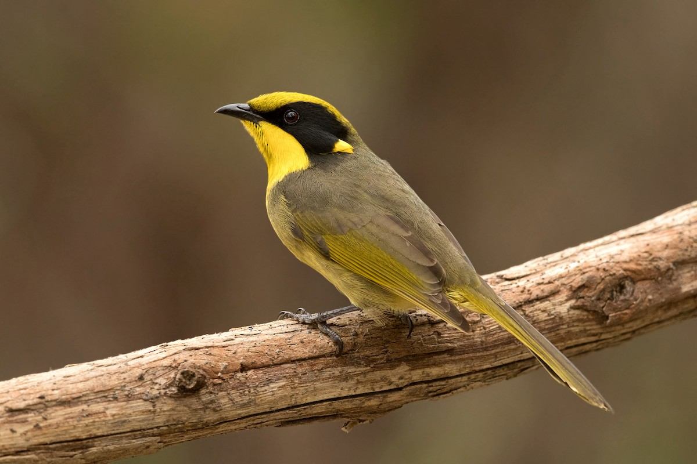

Helmeted Honeyeater Lichenostomus melanops cassidix The Helmeted Honeyeater is a critically endangered bird endemic to Victoria, Australia. Known for its striking yellow and black plumage and distinctive "helmet" of feathers on its head, this bird is the state's bird emblem and has a vital role in its ecosystem.

Habitat
Helmeted Honeyeaters are found in a few small, isolated patches of swampy forest and woodland in Victoria. Their habitats include riparian forests and dense vegetation along streams, where they build their nests and forage for food.
Diet
The diet of Helmeted Honeyeaters consists primarily of nectar, supplemented by insects and spiders. They feed on the nectar of a variety of native flowers, including eucalypts and banksias, which provide essential nutrients for their survival.
Conservation Status
Helmeted Honeyeaters are critically endangered, with only a small population remaining in the wild. Major threats include habitat destruction, altered fire regimes, and predation by introduced species. Conservation efforts focus on habitat restoration, captive breeding programs, and predator control.
How to Help
You can help protect Helmeted Honeyeaters by supporting conservation organizations, participating in habitat restoration projects, and raising awareness about their endangered status. Donations to wildlife conservation groups and volunteering your time to help with local conservation efforts can make a significant difference.
"Saving Australia's Endangered, Together for a Wilder Future"